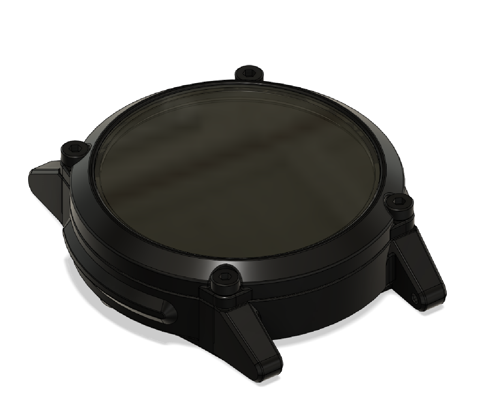

"5700 Joules" - PCB Wristwatch

how to read
The watch has two rings of LEDs, an hour ring and a minute ring. The hour ring tells you the hour, and the minutes ring tells you the minutes in 5 minute increments. The additional 4 minute LEDs at the bottom center tell you the number of minutes past the minute ring.
Setting the time
Timesetting is done through a simple UI based on a hall effect sensor. Holding a magnet near the center of the face of the watch for a few seconds puts it in timesetting mode. In this mode, each ring will slowly iterate through the time. When it reaches the current hour, remove the magnet for a second and then replace it. Repeat for the 5 minute increment, and then again for the 1 minute increment.
Circuit design
The schematic and PCB were designed in EasyEDA around the Attiny85 MCU. It uses two 74HC595 shift registers to control the LEDs through a matrix configuration, and uses a DS2417 RTC module for keeping accurate time, and an MCP7383 battery charging IC for charging the inbuilt 2S LiPo battery via two magnetic contacts on the back of the watch. The PCB was assembled by hand.
case design
The case was designed to be CNC milled from aluminum, but for now is 3D printed. It accepts standard watchbands of many different types. It houses the PCB, hall effect sensor, and a 400mAh LiPo battery and is printed in two parts, the main body and the bezel which is held on with M2 screws.
